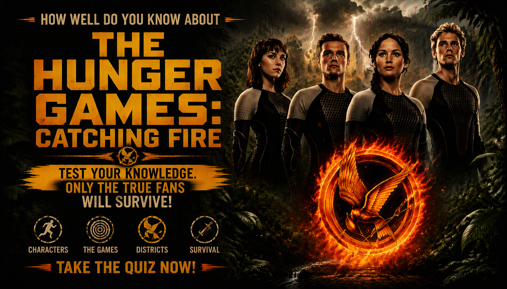

The Hunger Games: Catching Fire Quiz
Test your knowledge of Katniss, Peeta, Haymitch, the victors, the Quarter Quell, the Capitol and the growing rebellion in The Hunger Games: Catching Fire.
Ready? See how much you remember about the 75th Hunger Games and Katniss's return to the arena.
This quiz contains spoilers for The Hunger Games: Catching Fire.


ABOUT THE MOVIE
The Hunger Games: Catching Fire is the 2013 sequel to The Hunger Games and the second film in the Hunger Games movie series. The story follows Katniss Everdeen and Peeta Mellark after their victory in the previous Hunger Games.
Instead of allowing Katniss's victory to end the political tension surrounding the Games, President Snow becomes increasingly concerned about the effect her actions have had across Panem. Katniss and Peeta are sent on a Victory Tour before being forced back into the arena for the 75th Hunger Games.
The 75th Hunger Games is also known as the Third Quarter Quell. Its special rule requires the tributes to be selected from the existing pool of victors, meaning Katniss and Peeta must once again fight alongside and against people who have already survived previous Games.
The film expands the world of Panem beyond the arena. The Victory Tour, District 12, the Capitol, the training center and the Quarter Quell arena all play important roles as Katniss becomes increasingly connected to events much larger than the Games themselves.
Movie Details
Release year: 2013
Release date: November 22, 2013
Director: Francis Lawrence
Genre: Science fiction, action, adventure and dystopian drama
Runtime: Approximately 2 hours 26 minutes
Main character: Katniss Everdeen, played by Jennifer Lawrence
Other major characters: Peeta Mellark, Haymitch Abernathy, Gale Hawthorne, Effie Trinket, Finnick Odair, Johanna Mason and President Snow
Major setting: District 12, the Capitol and the Third Quarter Quell arena
Series position: Second film in The Hunger Games movie series
HOW THE QUIZ WORKS
This quiz contains 25 questions based specifically on the 2013 film The Hunger Games: Catching Fire. Each question provides four possible choices, with one correct answer.
The questions cover characters, relationships, locations, the Quarter Quell, the arena, important events and other details shown in the movie.
Each correct answer earns 1 point. Incorrect answers earn 0 points. Your total score is converted into a percentage when you finish the quiz.
The result screen shows your correct answers, incorrect answers, total questions and percentage, followed by your Catching Fire movie knowledge result.
Quiz Navigation
Starting the Quiz
Select START QUIZ on the opening screen. The first Catching Fire trivia question will then appear.
Selecting an Answer
Read all four choices before selecting your answer. Choose the option you believe is correct and continue through the quiz.
Next and Back
Use Next to move forward through the questions. The Back button allows you to return to an earlier question and review or change your selected answer.
Completing the Quiz
Answer all 25 questions and submit the quiz when prompted. Your score and percentage will then be displayed on the result screen.
Try Again and Challenge Friends
Select TRY AGAIN to replay the quiz. After completing it, you can also use SHARE MY RESULT or CHALLENGE YOUR FRIENDS to share your result.
FAQ
How many questions are in the Catching Fire quiz?
There are 25 questions. Each question has four possible choices, with one correct answer.
What is the maximum score?
The maximum score is 100%. Each of the 25 questions is worth 1 point before the result is converted into a percentage.
What topics are covered?
Questions cover Katniss, Peeta, Haymitch, Finnick, Johanna, the Capitol, the Victory Tour, the Third Quarter Quell, the arena, major events and other details from the film.
Is the quiz only about Katniss and Peeta?
No. The quiz includes questions about several characters as well as the Quarter Quell, arena, locations, political events, relationships and important story developments.
Which movie does this quiz cover?
This quiz covers the 2013 film The Hunger Games: Catching Fire, directed by Francis Lawrence and starring Jennifer Lawrence as Katniss Everdeen.
Is this quiz based on the book or the movie?
The questions on this page are intended to test knowledge of the movie adaptation The Hunger Games: Catching Fire. Some events and details differ between the book and film versions, so the quiz focuses on what is shown in the movie.
What does my score mean?
Your percentage represents the proportion of the 25 questions you answered correctly. It measures how many of the tested movie details you remembered.
Can I take the quiz again?
Yes. Select TRY AGAIN after completing the quiz to start another attempt.
Can I challenge my friends?
Yes. Select CHALLENGE YOUR FRIENDS after completing the quiz to share the challenge.
Do I need to watch Catching Fire before taking the quiz?
It is recommended. The questions are based on characters, events and details shown in the film, including some plot developments that may be difficult to answer without watching it.
Is the quiz spoiler-free?
No. The page and quiz contain spoilers for The Hunger Games: Catching Fire, including important events involving the Quarter Quell and its characters.
Spoiler Warning
This page and quiz contain spoilers for The Hunger Games: Catching Fire. The information includes details about the Victory Tour, the Third Quarter Quell, the arena, Katniss, Peeta, Finnick, Johanna and major developments near the end of the movie.
If you have not watched The Hunger Games: Catching Fire, consider watching the movie before reading the detailed sections or taking the quiz.